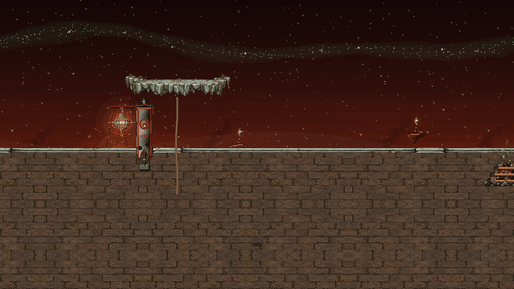
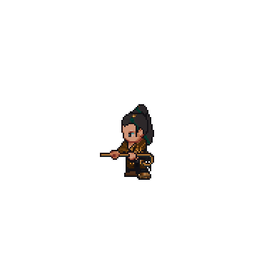
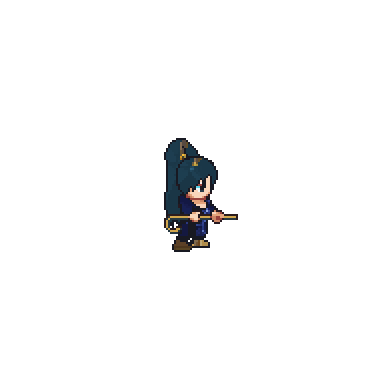
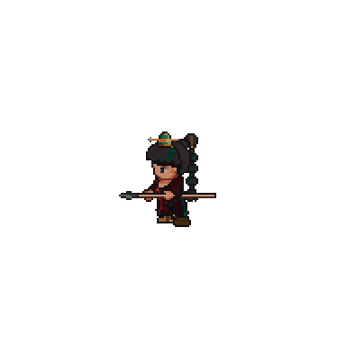
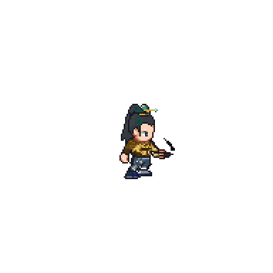
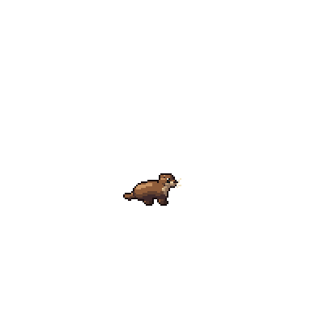
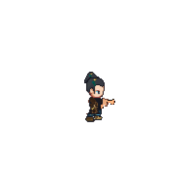
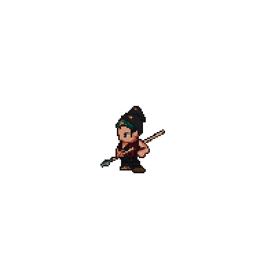
Lv 91Ashborn Pyre Keeper
Lv 92Ashborn Raider
18.2K
6,480
Tester
Sphere Lord 3 · Lv 97
HP
QI
SL
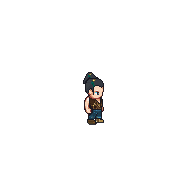
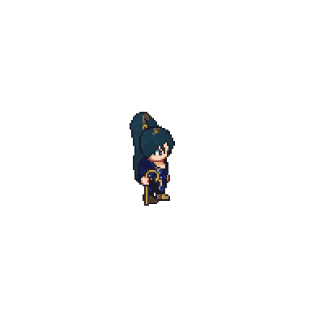
Otter
Tie Niu
Lan Yue
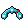
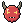
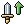
General KharnLv 92 · phase 2 of 3
47%
60% · Pyre Keeper called ✓
30% · Enrage
Kharn's Pyre
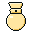
1
General Kharn calls an Ashborn Pyre Keeper
Lan Yue mends Tie Niu
Lan Yue mends Tie Niu
5
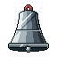
3
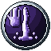
1/2
28%
Lv 98
Lv 99